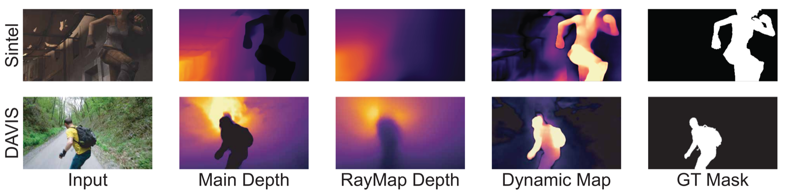
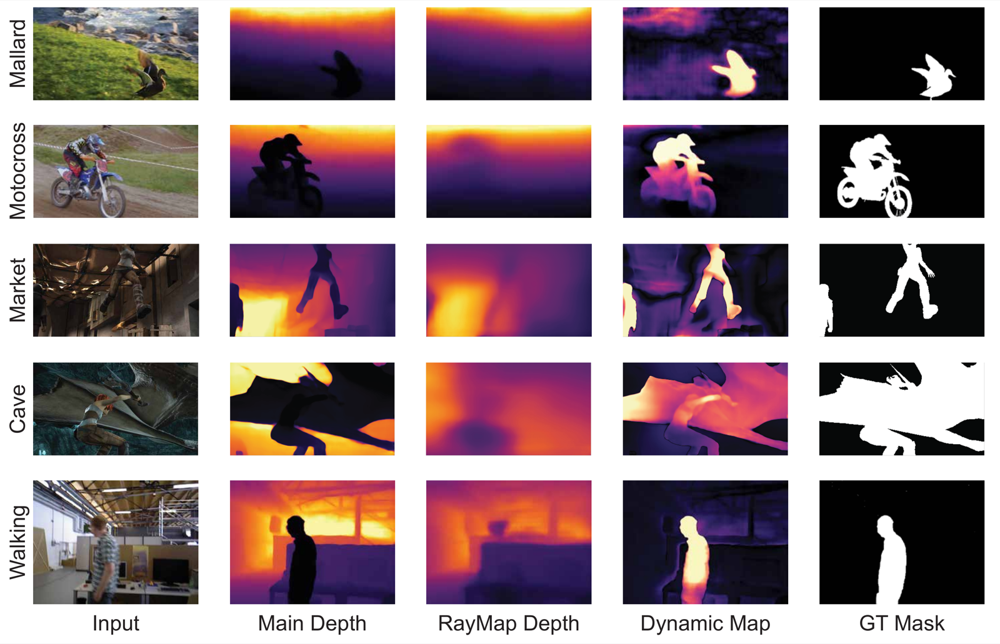
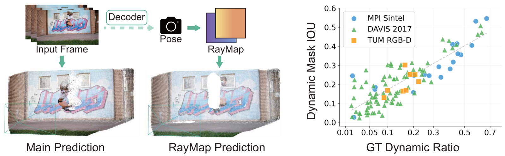
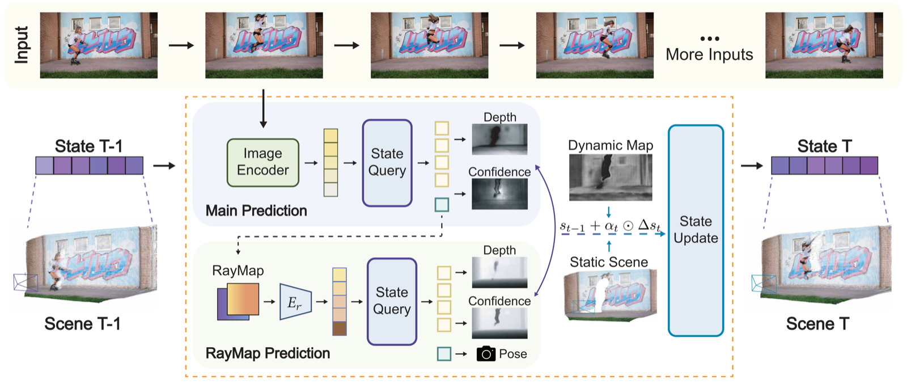
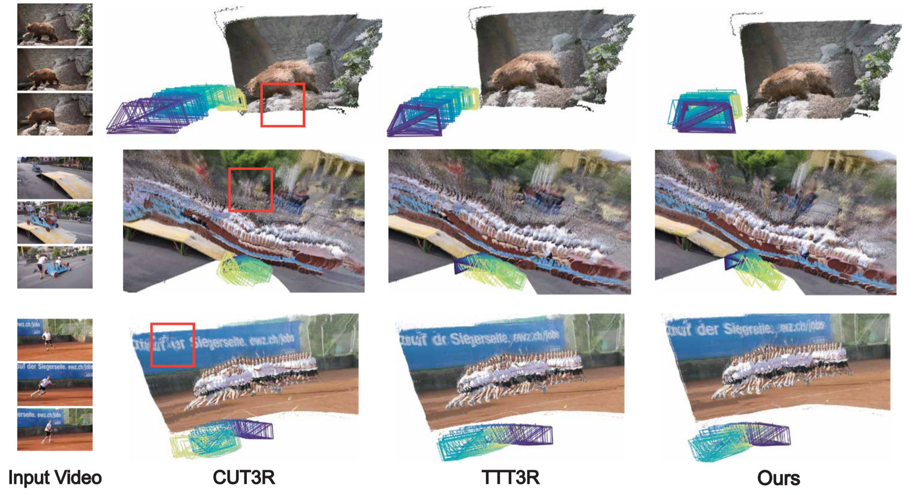
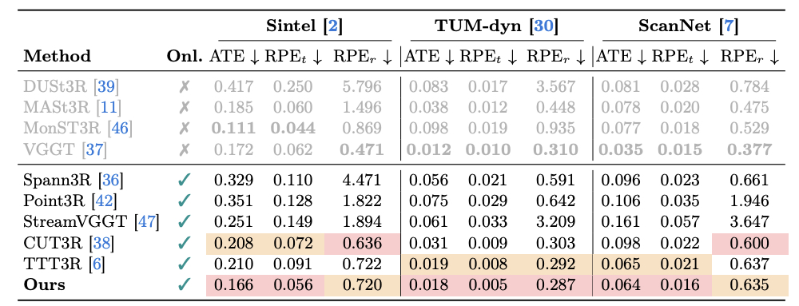
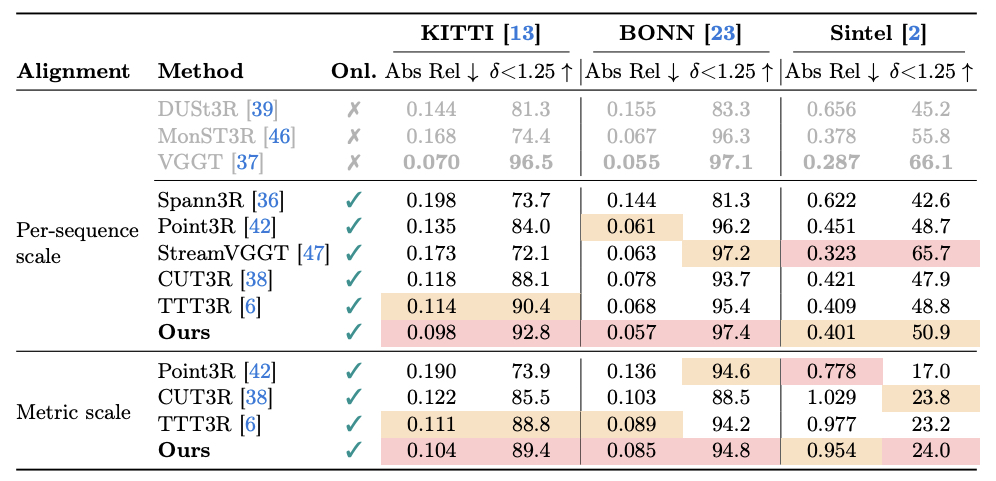
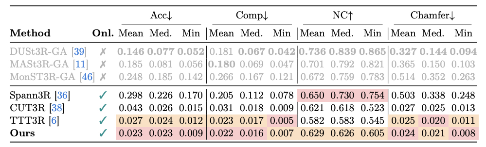

TL;DR A training-free dual-branch scheme that exploits RayMap's static-scene bias for dynamic-aware streaming 3D reconstruction.
Streaming feed-forward 3D reconstruction enables real-time joint estimation of scene geometry and camera poses from RGB images. However, without explicit dynamic reasoning, streaming models can be affected by moving objects, causing artifacts and drift. In this work, we propose RayMap3R, a training-free streaming framework for dynamic scene reconstruction. We observe that RayMap-based predictions exhibit a static-scene bias, providing an internal cue for dynamic identification. Based on this observation, we construct a dual-branch inference scheme that identifies dynamic regions by contrasting RayMap and image predictions, suppressing their interference during memory updates. We further introduce reset metric alignment and state-aware smoothing to preserve metric consistency and stabilize predicted trajectories. Our method achieves leading performance among streaming approaches on dynamic scene reconstruction across multiple benchmarks.
We observe that when only camera rays (RayMap) are provided as input, without the actual image, the model tends to reconstruct only the static background and ignore dynamic objects. This bias provides a built-in signal for dynamic identification.

The RayMap branch reconstructs primarily static structure, while the main branch captures the full scene including dynamic objects. Their per-pixel depth discrepancy aligns well with the ground-truth dynamic mask.

The same pattern holds across diverse scenes including animals, vehicles, and pedestrians, showing that the static-scene bias is not limited to specific object types.
We exploit this bias through a dual-branch inference scheme that contrasts the main branch (image + RayMap) with the RayMap-only branch. The per-pixel depth discrepancy yields a dynamic map that serves as a proxy for dynamic content identification.

Left: Dual-branch contrast: the depth difference reveals dynamic regions. Right: Dynamic mask IoU versus ground-truth dynamic ratio across 108 sequences from MPI Sintel, DAVIS 2017, and TUM RGB-D (Spearman ρ = 0.77). Scenes with higher dynamic content yield stronger detection signals.

Pipeline Overview. At each timestep, the main branch predicts depth and pose from both image and RayMap features, while the RayMap branch queries the same frozen state using only camera-ray tokens. The per-pixel depth discrepancy between branches is projected onto state tokens via cross-attention to form staticness weights, which gate memory updates (st = st-1 + αt ⊙ Δst). Reset metric alignment and state-aware smoothing further stabilize the output trajectory.
We compare 3D reconstruction quality with CUT3R and TTT3R on dynamic DAVIS sequences. RayMap3R produces more coherent point clouds with fewer ghosting artifacts and reduced camera drift, as suppressing dynamic content prevents corrupted geometry from accumulating in the memory state.

From top to bottom: sequences with dynamic animals, human motion, and a moving boat. RayMap3R preserves fine-grained details such as legible text on the boat surface, where baselines produce collapsed or blurred geometry.
Frame-by-frame visualization of the dual-branch contrast on the DAVIS longboard sequence. The dynamic map maintains spatial consistency across consecutive frames without explicit temporal smoothing, tracking moving subjects as their position and apparent scale change.
We evaluate RayMap3R on camera pose estimation, video depth estimation, and 3D reconstruction across multiple benchmarks. Among streaming (online) methods, RayMap3R achieves the lowest ATE on all three pose benchmarks and the lowest Abs Rel on KITTI and Bonn, while maintaining real-time efficiency and constant memory usage.

Camera pose estimation (ATE, RPE) on Sintel, TUM-dynamics, and ScanNet.

Video depth estimation on KITTI, BONN, and Sintel.

3D reconstruction quality (Acc, Comp, NC, Chamfer) on 7-Scenes.
@article{wang2026raymap3r,
title = {RayMap3R: Inference-Time RayMap for Dynamic 3D Reconstruction},
author = {Wang, Feiran and Shang, Zezhou and Liu, Gaowen and Yan, Yan},
year = {2026}
}